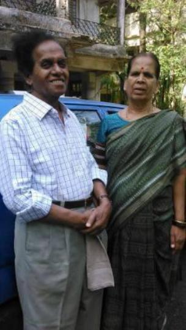

50
Sudhir and Pushpa Waghmare
Through this single act the Mahar community was transformed beyond
words. In Waghmare's words, “Ugly practices like Devdasi system,
animal sacrifice and getting possessed by gods stopped immediately
(after the conversion). People threw the idols in their houses into the
canal. People realized that they were following these rituals because of
their ignorance. They gave up eating dead meat and refused to perform
their traditional duties in the village economy.”
This very conscious creation of a new identity rooted in an ideology that
opposed the unjust brahminical religion – the courage needed for it was
very visible in Waghmare's words: “It was a test of our belief, as the
Savarna samaj reacted violently to the conversion, particularly in rural
areas. Our people were denied food and water, their livelihood taken